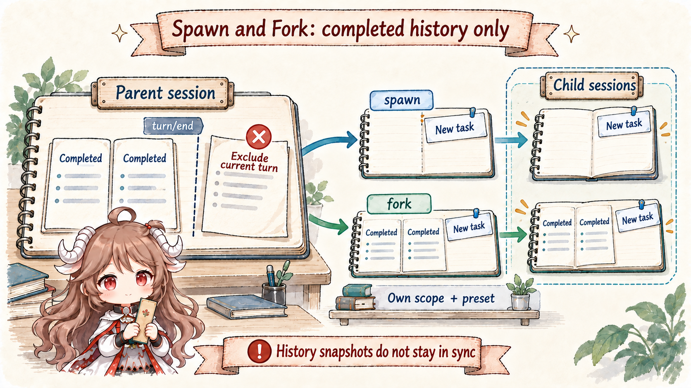
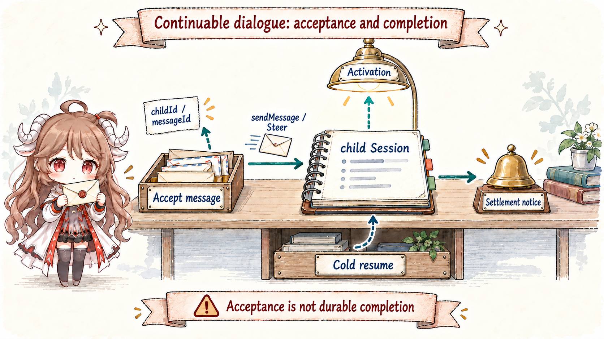
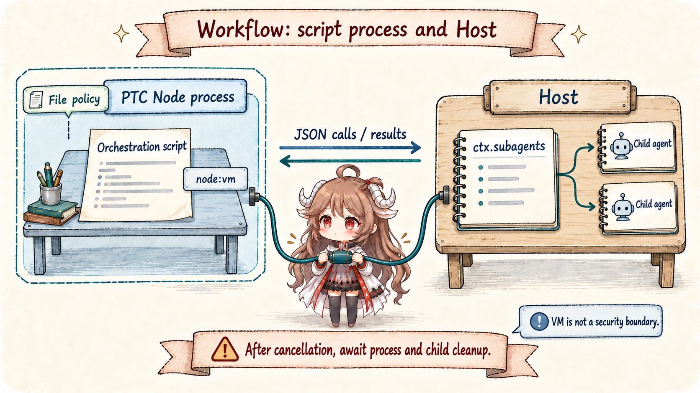
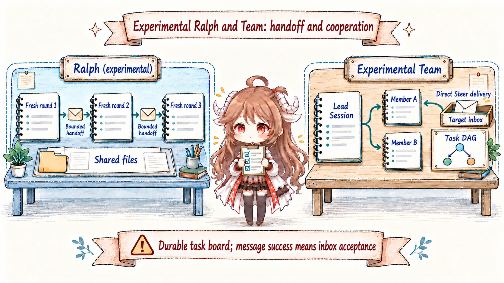

Delegation chooses context, result recipient, cancellation ownership, and resource limits. Local spawn, fork, and external backends now enter startActivation(). The runtime owns admission, lifecycle, and cleanup; consumers choose a parent notice or a result collected by a Workflow script.
ctx.subagents manages child executions; ctx.workflowEngine hosts scripted orchestration. Experimental Ralph supplies a fixed fresh-session relay, while experimental Team adds named members, direct messages, and a durable task board. These layers share child execution while retaining their own coordination state.
Reading route.Start with the unified Activation interface, then follow spawn/fork history and presets, message acceptance and settlement, shared capacity, and ownership in Workflow, Ralph, and Team.
This chapter is verified against 687f282 (dsh-v0.2.1-rc.2). Ralph and Team both live under packages/experimental and require explicit composition.
1. Unified Activations with consumer-selected result delivery
1.1 Local and external backends share admission and cleanup
SubagentRuntime registers named backends. startActivation({ provider, label, request, signal, delivery }) returns { childId, messageId?, result, dispose }. Local spawn/fork creates a continuable Session; external ACP, DSH SDK, Codex, or Claude Code backends execute once. messageId exists only with a local inbox, while childId identifies every child execution.
delivery: 'parent' asks the runtime to send a settlement notice. 'caller' lets Workflow collect result, omitting parent notices and initial return guidance. Local parent delivery requires Session persistence. Caller delivery permits an ephemeral child; cold continuation after disposal still requires persistence and session query.
tool-subagent returns started subagent <childId> as soon as activation is accepted. The runtime delivers final output later. This unified interface replaces the former foreground/background and startContinuable() split.
1.2 Check depth and capabilities before creation
Child headers retain parentSession and delegationDepth. Host maxDepth defaults to 1; the tool samples the default on each delegation. Explicit tool configuration can override it, 0 disables that tool's delegation, and provider-managed leaves enforcement to an external backend. At the limit, the tool remains visible and rejects calls. Direct service consumers supply their own optional maxDepth; Workflow startChild supplies none, so deployments must review those entry points separately.
Backend capabilities govern model overrides, independent presets, structured output, and depth limits. Local spawn currently supports an independent agentPreset; fork and external backends reject it. Optional model selection also requires agentOptions. Its route allowlist is sampled and persisted when a new top-level Session is created; existing Sessions retain that list.
2. spawn and fork: history seeds and composition
2.1 Spawn starts empty; subagent fork keeps completed turns

spawn supplies no seed and receives a standalone task. fork still uses completedTurnPrefix() through the newest turn/end, excluding the current delegating turn. Without a completed parent turn, the child starts empty. This seed is captured once; later parent events do not synchronize.
The general Session fork API separately supports exact event prefixes and open-tail completion, covered in Part III. The subagent_fork provider continues to use its completed-turn policy; each entry point has its own cutoff.
2.2 Presets own the new child's persona and tools
applyChildComposition() creates an independent scope for each child. Omitting agentPreset joins the parent's currently composed preset revision. An explicit spawn preset id mounts its currently available revision; even an id matching the parent can select a newer revision. Persona and tool plugins now belong in that preset. Legacy tool-subagent.persona and toolFilter configuration raises a migration error. Historical descriptor fields remain available for cold-resume compatibility.
Provider, model, and reasoning effort prefer the parent's last logged request, falling back to creation options before its first request; configured maxTokens is retained. Changing route without an explicit effort clears the old value. Both local spawn and fork are continuable children managed by the unified manager. Same-route fork cache reuse depends on the final request prefix, tool definitions, and model route.
The working directory is captured at startup. Relative cwd resolves against the parent's current directory; omission inherits it. The child's own directory follows inherited history and survives continuation and restore. Permission capture is separate: approval becomes never when that service exists, explicit sandbox overrides and permission-preset identity are captured, and permission roots retain the parent's origin. A distinct cwd does not create a separate worktree.
3. Message acceptance, execution settlement, and release
3.1 Cancel before publication; dispose after publication
SubagentActivation defines fulfillment of startActivation() as publication. The input signal owns pre-publication cancellation. After publication, the caller uses dispose() to stop that exact Activation and await its descendants, pending starts, and resource cleanup. An old handle cannot dispose a later resumed Activation of the same Session.
result settles after teardown and notification processing. Capture failures reject after cleanup. Cleanup failures reject dispose() and mark the lifecycle failed while preserving an already captured execution result. Service consumers need to handle both execution and cleanup outcomes.
3.2 Continuable Sessions and resident Activations

A local activation can return childId and messageId once its initial prompt enters the inbox. Its turn may not have started and its message may not yet be in the Session log. Each child has at most one process-local Activation at a time; its durable Session can span several residency periods.
SubagentManager requires the exact live sender and a direct parent/child relationship for sendMessage(). A working target receives Steer at the nearest step; an idle target begins a turn, and a direct child can cold-resume. Human input separately offers Queue and Steer; Queue targets a later turn. interrupt() cancels the current turn while retaining the inbox and published descendants. A parked queue may need another waking send.
Runtime settlement notices report outcome and final output; model-authored messages preserve sender identity. An acceptance receipt confirms inbox admission. Accepted messages not yet logged can still be lost in a crash, and delivery to the parent requires a live parent. An idle child with a parked inbox may remain resident, but Host completion joins active work, pending child creation, and cleanup without waiting for that idle inbox.
3.3 Local and external descendants share capacity
ActivationPool defaults maxActiveSubagents to 8, now covering local and external descendants in the same tree; the root consumes no slot. Creation and cold resume synchronously reserve during materialization, before rebuilding an Agent or starting an external backend. Parents waiting on descendants, pending inboxes, and stopping Activations keep their slots until cleanup ends. Exhaustion rejects immediately with ACTIVATION_LIMIT_REACHED.
Each start or resume reads the current capacity. Lowering it rejects new activations while existing children continue. Messages to a resident child reuse its slot. The parent's subagentCatalog projection owns the child directory; listChildren() reads direct children in parent-event order and prefers live state. Recursive discovery reads reachable local-child catalogs without loading or waking Agents; external children are leaves.
const activation = await ctx.subagents.startActivation({
provider: 'spawn', label: 'review', delivery: 'caller', signal,
request: { parent, prompt: [{ type: 'text', text: 'Review the patch' }] },
})
try {
const result = await activation.result
// Verify the evidence before accepting the task conclusion.
} finally {
await activation.dispose()
}4. Workflow runs scripts in PTC while the Host owns children
4.1 Script is the control plane; Agents remain on the Host

The PTC workflow engine defaults to executionMode: per-call, using a fresh Node process per run, reusing PTC launch, transport, and file-sandbox providers. Scripts retain args and agent(), parallel(), pipeline(), phase(), and log(). Host bindings reach ctx.subagents; the Host owns child Activations with delivery: caller while the guest exchanges JSON, not Agent objects. The engine requires a TypeScript PTC provider; Python compositions must disable these workflow consumers. The Node runtime also supports opt-in persistent-in-memory; the engine adapts to its REPL programFormat. Memory retention does not recover script progress after a crash.
Values crossing the process boundary must be lossless JSON: functions, cycles, sparse arrays, exotic prototypes, non-finite numbers, and nested undefined reject. Default maxConcurrentAgents: 0 resolves from CPU, maxTotalAgents: 1000, and each parallel/pipeline call permits 4096 items. Requests may only lower the total cap. These are cooperative helper limits, not Host-enforced security quotas; PTC maxPendingCalls must also leave room for child startup, result waits, disposal, and progress.
4.2 File policy, cancellation, and cleanup protect different properties
The calling Session’s standing file policy and cwd govern the process. Its program-visible process.env is empty; node:vm still shapes ordinary APIs, while actual file enforcement depends on the selected OS sandbox provider and does not restrict networking. The engine requests timeoutMs: null, with no overall elapsed deadline. The initial synchronous slice retains the default syncTimeoutMs: 5000; caller deadlines and abort signals still apply.
Cancellation immediately aborts the PTC process and pending or active children. A child published after cancellation must also be disposed. The caller’s dispose() awaits process settlement and child cleanup, without a separate abandonment timer. Execution failures resolve to stopReason: error, cancellation to cancelled; ordinary child failure gives the script null to handle. Restart does not resume intermediate script progress.
5. Coordination state in experimental Ralph and Team
5.1 Ralph relays fresh children through bounded reports

ralph has moved to packages/experimental/tool-ralph and remains a fixed foreground workflow. Use it only when the direct human explicitly requests Ralph-style fresh-agent iteration. Each round starts a structured-output child with no parent seed, receiving an immutable objective, round metadata, shared-workspace instruction, and the preceding bounded handoff. Defaults allow 256 rounds and 16384 handoff characters.
Reports carry continue, complete, or blocked; the final tool result is complete, blocked, or budget-limited. Completion and blockers are worker reports that need validation against actual artifacts. Ordinary child failure ends the run without retry. The workspace retains cross-round state; uncommitted reasoning disappears with each child.
5.2 Team persists roster and tasks and delivers messages directly
Agent Team uses the root Session id as its implicit TeamId; named teammates are continuable direct children. The Lead log retains team/member and revisioned team/task, appending and flushing those mutations before reporting success. Task dependencies remain a DAG; mutations carry expectedRevision and reject stale versions.
sendMessage() steers directly into the target inbox. Lead delivery calls Agent.steer(); teammate delivery uses the Host continuation path and can cold-resume its target. The returned MessageId confirms acceptance; processing and persistence follow the target Agent's ordinary policy. Messages retain agent-message sender identity and a Team message from <name>: prefix.
Team no longer writes new team/message/queued or delivered records. It retains no unaccepted send intent, retries no new messages after restart, and does not deduplicate explicit resends. Historical mailbox records remain readable; old undelivered records are no longer replayed. Members still share one checkout. writeScopes warns about overlapping paths; external coordination supplies file locks and worktree isolation. Interruption, inactivity, and process exit do not automatically release task ownership.
6. Organize multi-agent work around ownership
- Separate identity from execution period.A local Session can outlive an Activation, whose cancellation and cleanup address one execution.
- Verify each stage.Inbox admission, execution results, and actual artifacts provide distinct evidence for task acceptance.
- Check limits at each entry point.Tool depth, shared activation capacity, and Workflow helper caps apply at different layers.
- Assign shared-directory ownership.Presets compose tools, sandbox policy controls access, and coordinators handle concurrent writes and final review.
Part VII returns to Cordis, tracing Inspect and plugin_manager through runtime discovery, persistent profile bundles, and the separate observations of install acceptance, profile persistence, and runtime application.